方式一：OpenAkita Desktop
图形化配置，支持开关、凭证填写、状态检测和一键重启，适合新手与运维同学。
推荐顺序：先完成大模型基础连通，再按平台逐个接入 IM 通道，最后统一做联调与上线检查。
| 平台 | 状态 | 接入方式 | 需要公网 IP | 安装命令 | 难度 |
|---|---|---|---|---|---|
| Telegram | 稳定 | Long Polling | 不需要 | 默认包含 | 低 |
| 飞书 | 稳定 | WebSocket 长连接 | 不需要 | pip install openakita[feishu] | 低 |
| 钉钉 | 稳定 | Stream 模式 | 不需要 | pip install openakita[dingtalk] | 低 |
| 企业微信 | 稳定 | WebSocket 长连接 | 不需要 | pip install openakita[wework] | 低 |
| 稳定 | WebSocket 长连接 | 不需要 | pip install openakita[qq] | 低 | |
| 微信 | 稳定 | iLink Bot API | 不需要 | pip install openakita[wechat] | 低 |
| 类型 | Telegram | 飞书 | 钉钉 | 企业微信 | 微信 | |
|---|---|---|---|---|---|---|
| 文字 | 支持 | 支持 | 支持 | 支持 | 支持 | 支持 |
| 图片 | 支持 | 支持 | 支持 | 单聊支持 | 支持 | 支持 |
| 语音 | Whisper 转写 | Whisper 转写 | Whisper 转写 | 不支持 | Whisper 转写 | Whisper 转写 |
| 文件 | 支持 | 支持 | 支持 | 不支持 | 支持 | 支持 |
| 视频 | 支持 | 支持 | 支持 | 不支持 | 支持 | 支持 |
| 类型 | Telegram | 飞书 | 钉钉 | 企业微信 | 微信 | |
|---|---|---|---|---|---|---|
| 文字 | 支持 | 支持 | 支持 | 支持（stream） | 支持 | 支持 |
| 图片 | 支持 | 支持 | 支持 | 支持（JPG/PNG） | 支持 | 支持 |
| 语音 | 支持 | 支持 | 降级为文件 | 不支持 | 支持 | 支持 |
| 文件 | 支持 | 支持 | 降级为链接 | 降级为文本 | 支持 | 支持 |
| 视频 | 支持 | 支持 | 支持 | 不支持 | 支持 | 支持 |
企业微信智能机器人通过 stream 被动回复文本和图片，不支持语音、文件、视频收发。
# 安装全部 IM 依赖
pip install openakita[all]
# 或按需安装单通道
pip install openakita[feishu]
pip install openakita[dingtalk]
pip install openakita[wework]
pip install openakita[qq]
pip install openakita[wechat]
pip install openakita[whisper]
# 组合安装示例
pip install openakita[feishu,dingtalk,qq,wechat,whisper]图形化配置，支持开关、凭证填写、状态检测和一键重启，适合新手与运维同学。
执行 openakita setup，在 Step 4 选择并配置 IM 通道，适合命令行用户。
直接编辑 .env，适合高级用户精细化控制。三种方式最终都写入同一文件。
# 启动交互式配置向导
openakita setup


Telegram 是最容易配置的 IM 通道，只需 Bot Token 即可，默认采用 Long Polling。
在 Telegram 搜索栏中搜索 @BotFather，点击进入对话。
发送 /newbot，设置显示名称以 bot 后缀结尾。
创建完成后 BotFather 返回 Bot Token，妥善保管。
可执行 /setuserpic、/setdescription、/setcommands 等。
群聊需要接收全量消息时，向 BotFather 发送 /setprivacy 并选择 Disable。


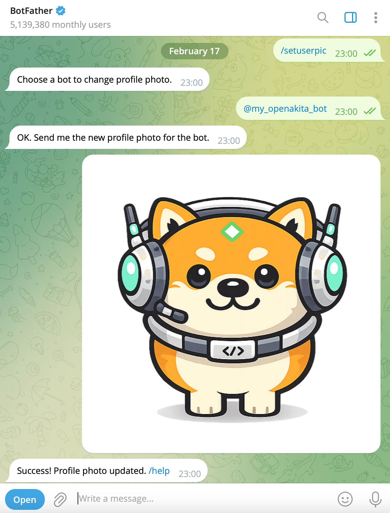
打开 Desktop，进入「IM 通道」，点击「引导创建」
选择接入「Telegram」，选择绑定的 Agent
设置机器人标识和名称（Bot ID 创建后不可更改）
填写 Bot Token，生成配对码，保存并重启服务


# 启动向导后在 Step 4 选择 Telegram
openakita setup
# 按提示输入 Bot Token、是否启用配对码、代理地址等# --- Telegram ---
TELEGRAM_ENABLED=true
TELEGRAM_BOT_TOKEN=your-bot-token
TELEGRAM_PROXY=http://127.0.0.1:7890
# TELEGRAM_PROXY=socks5://127.0.0.1:1080
# 可选：配对机制
# TELEGRAM_REQUIRE_PAIRING=true
# TELEGRAM_PAIRING_CODE=your-secret-code
# 可选：Webhook 模式
# TELEGRAM_WEBHOOK_URL=https://your-domain.com/webhook/telegram| 模式 | 需要公网 IP | 说明 |
|---|---|---|
| Long Polling（默认） | 不需要 | 适合绝大多数场景 |
| Webhook | 需要 | 需要公网 HTTPS 回调 |
/start，如启用配对需输入配对码。
A：优先检查 TELEGRAM_PROXY 是否可达，代理协议是否匹配。
A：检查 Token 是否正确、服务是否正常启动、日志是否报错。
A：检查是否需要关闭隐私模式（通过 BotFather /setprivacy）。
A：确认 TELEGRAM_PAIRING_CODE 与输入一致。
飞书通过 WebSocket 长连接接入，无需公网 IP，适合企业内部使用。
# OpenAkita Desktop 用户可跳过，依赖会自动安装
pip install openakita[feishu]打开 Desktop，进入「IM 通道」，点击「引导创建」
选择接入「飞书」，选择绑定的 Agent
设置机器人标识和名称
飞书扫码创建机器人
保存并重启服务


openakita setup
# 在 Step 4 选择 [2] Feishu (Lark)，按提示输入 App ID 和 App Secret# --- 飞书 ---
FEISHU_ENABLED=true
FEISHU_APP_ID=cli_a5xxxxxxxxxxxxx
FEISHU_APP_SECRET=xxxxxxxxxxxxxxxxxxFeishu adapter: WebSocket started in background。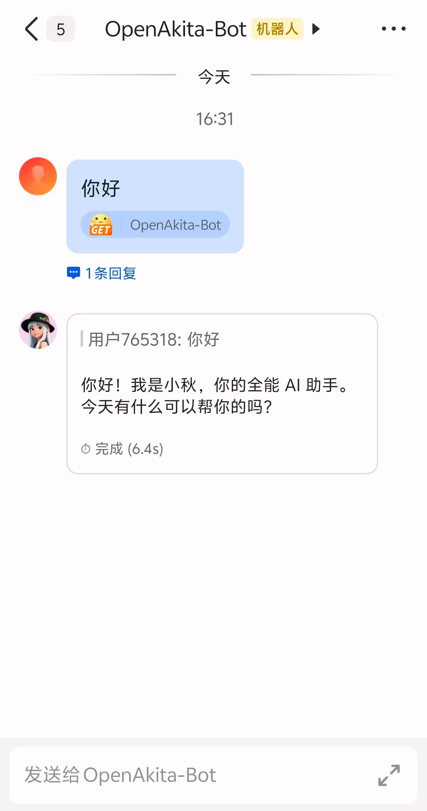
A：确认应用已发布且你在可用范围内。
A：确认是长连接模式，不是 Webhook 模式。
A：确认所有必要权限已开通，且应用已重新发布。
A：检查 App ID 和 App Secret 是否正确。
钉钉使用 Stream 模式（WebSocket）接入，无需公网 IP，企业内部部署友好。
访问 钉钉开放平台，使用钉钉扫码或账号密码登录。
在「应用开发」中选择「企业内部应用」→「钉钉应用」→「创建应用」。
在「凭证与基础信息」中记录 AppKey（Client ID）和 AppSecret（Client Secret）。
在「添加应用能力」中添加机器人，并填写名称、简介等信息。
⚠️ 必须选择 Stream 模式（WebSocket），不要选 HTTP 模式。
申请「企业内机器人发送消息」「通讯录个人信息读权限」后发布应用。
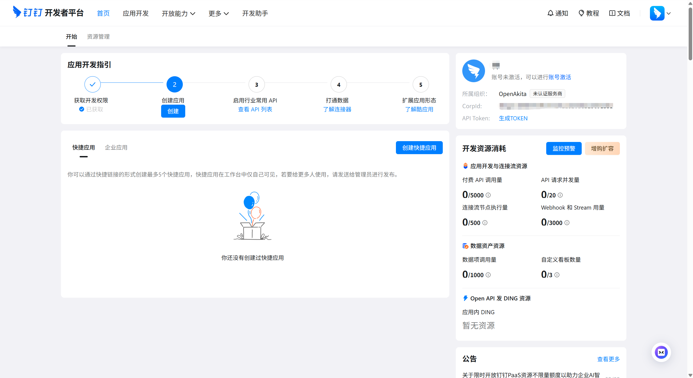
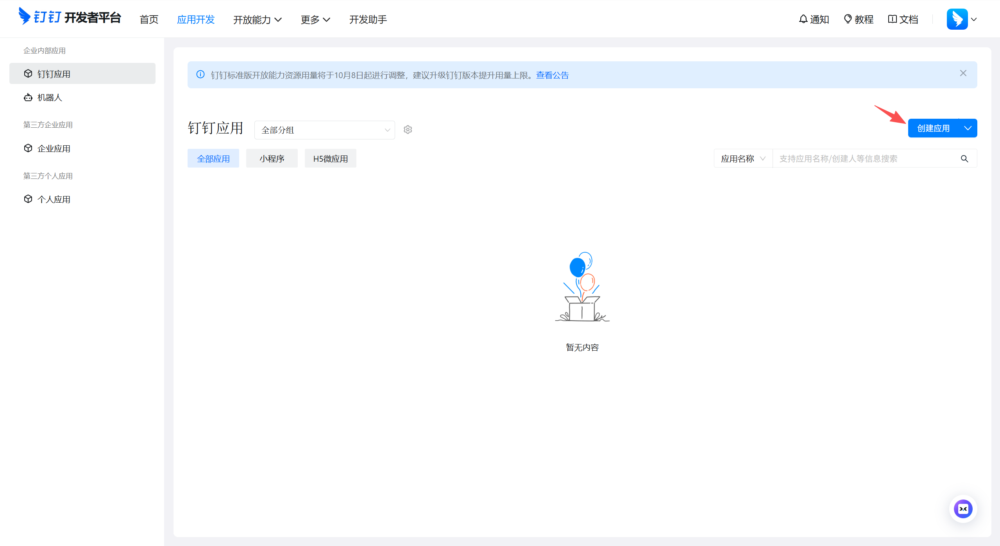
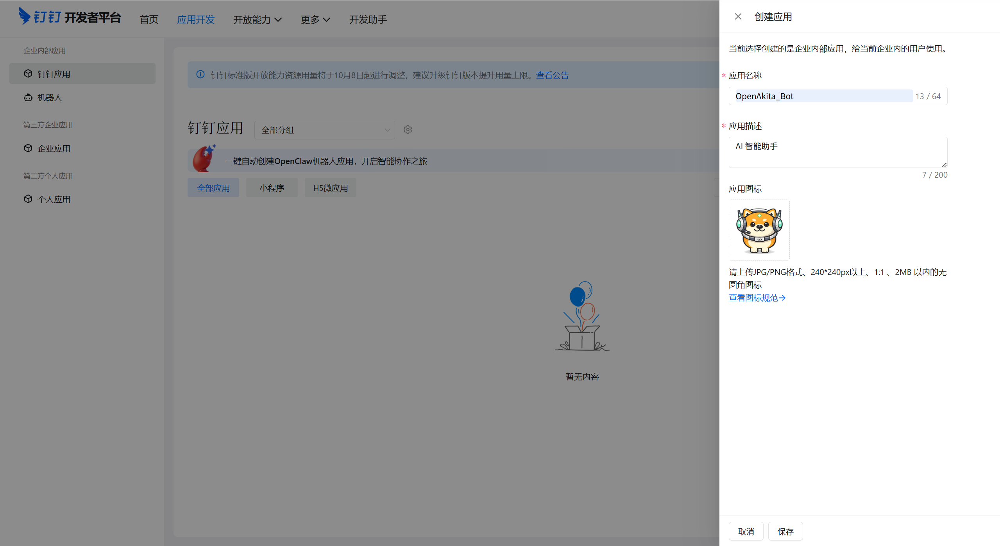

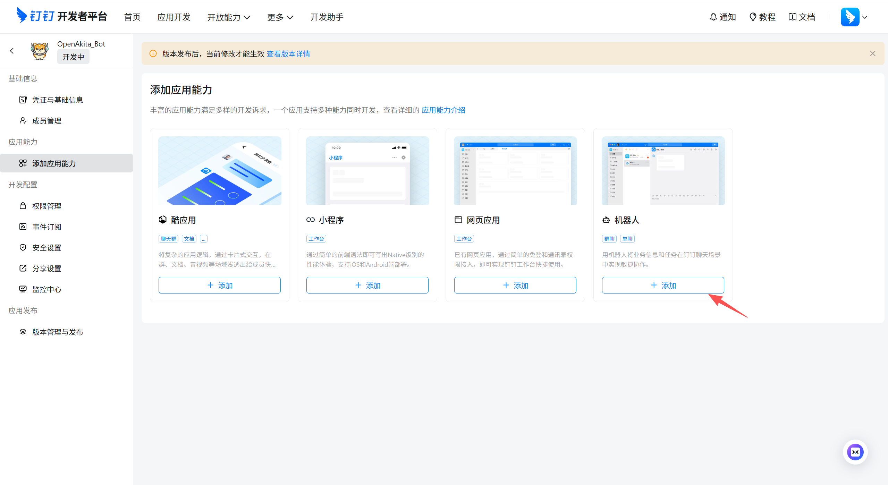
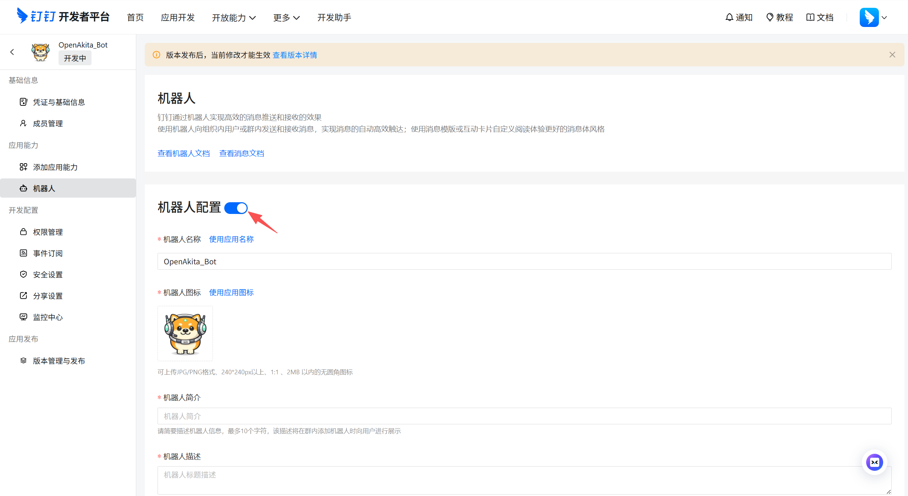
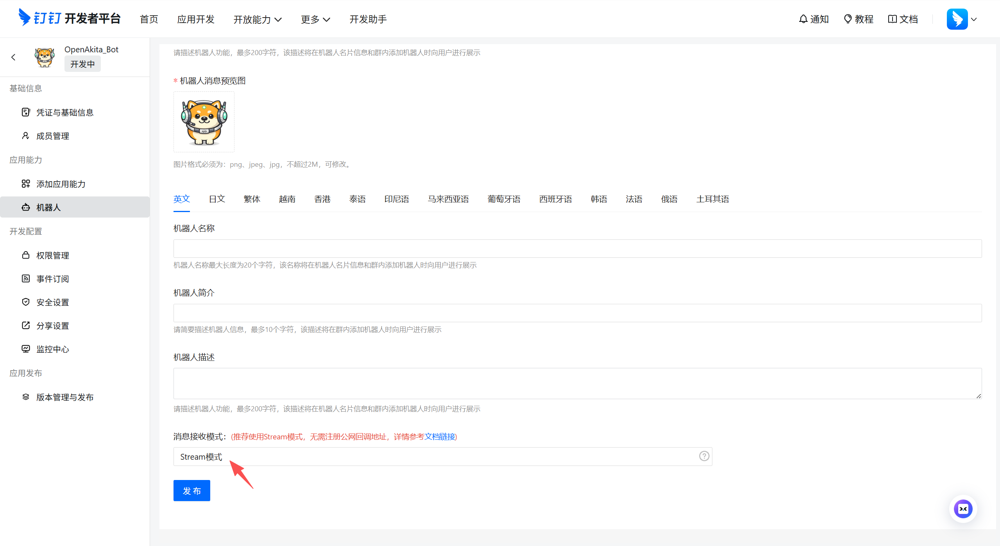
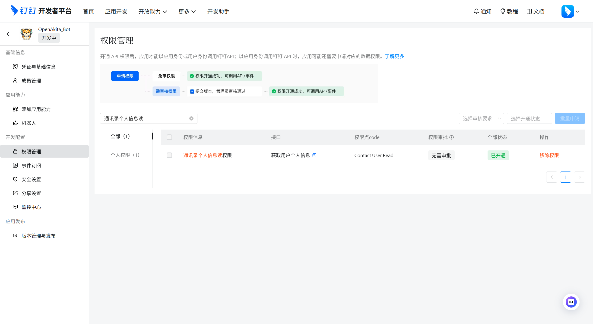
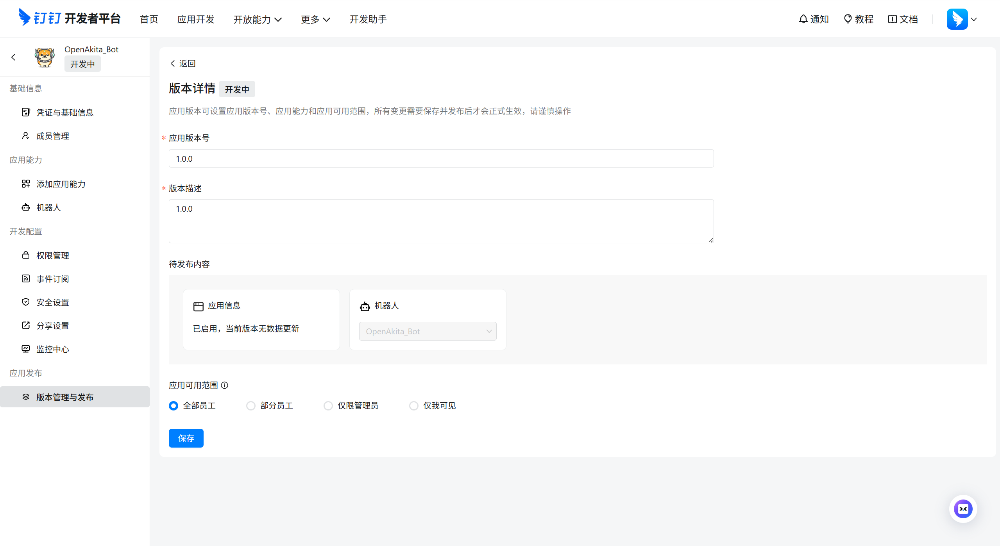
# OpenAkita Desktop 用户可跳过，依赖会自动安装
pip install openakita[dingtalk]打开 Desktop，进入「IM 通道」，点击「引导创建」
选择接入「钉钉」，选择绑定的 Agent
设置机器人标识和名称
填写 App Key 和 App Secret，保存并重启服务


openakita setup
# 在 Step 4 选择 [4] DingTalk (钉钉)，按提示输入 App Key 和 App Secret# --- 钉钉 ---
DINGTALK_ENABLED=true
DINGTALK_CLIENT_ID=dingxxxxxxxxxx
DINGTALK_CLIENT_SECRET=xxxxxxxxxxxxxxxxxxDingTalk Stream client starting...。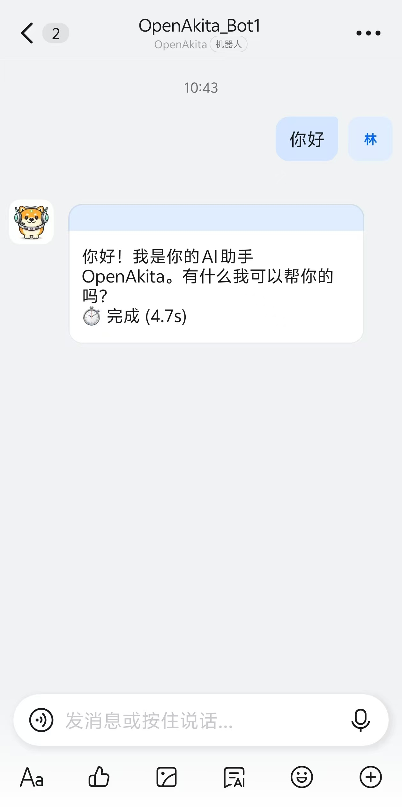
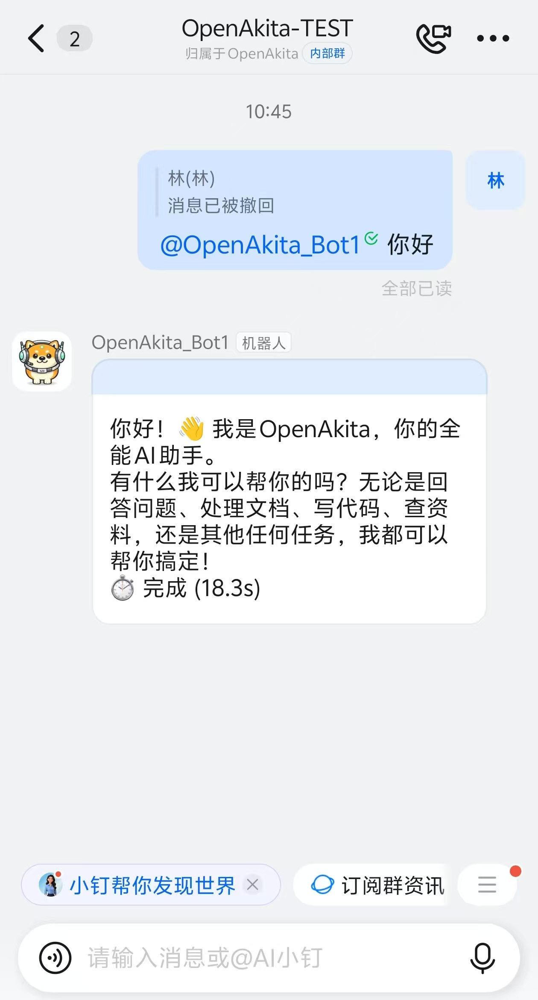
A：确认后台已选择 Stream 模式（不是 HTTP 模式）。
A：检查 Client ID 和 Client Secret 是否正确。
A：确认机器人已添加到群聊中且应用已发布可见。
A：钉钉部分富媒体会降级为链接展示。
企业微信通过 WebSocket 长连接接入，无需公网 IP。
# OpenAkita Desktop 用户可跳过，依赖会自动安装
pip install openakita[wework]打开 Desktop，进入「IM 通道」，点击「引导创建」
选择接入「企业微信」，选择绑定的 Agent
选择接入模式 — WebSocket 长连接
设置机器人标识和名称
扫码配置企业微信机器人
保存并重启服务


openakita setup
# 在 Step 4 选择 [3] WeCom (企业微信)，按提示输入 Corp ID、Token、EncodingAESKey# --- 企业微信 ---
WEWORK_ENABLED=true
WEWORK_CORP_ID=ww1234567890abcdef
WEWORK_TOKEN=your-token-here
WEWORK_ENCODING_AES_KEY=your-aes-key-here
WEWORK_CALLBACK_PORT=9880企业微信智能机器人使用 stream 流式被动回复机制。
| 方向 | 支持 | 限制 |
|---|---|---|
| 发送 | 文本、图片（JPG/PNG ≤10MB） | 语音/文件/视频不支持 |
| 接收 | 文字、图文混排、图片 | 图片仅单聊，群聊不支持图片输入 |
WeWorkBot adapter started。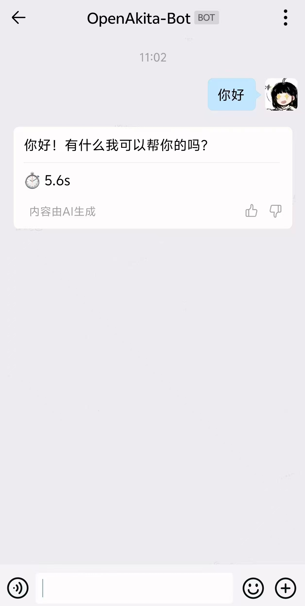
A：回调 URL 不通。确认服务已启动且公网地址可访问。
A：检查 Token 与 EncodingAESKey 是否与后台一致。
A：检查该成员是否在机器人可见范围内。
QQ 通过 WebSocket 长连接接入，无需公网 IP。
# OpenAkita Desktop 用户可跳过，依赖会自动安装
pip install openakita[qq]打开 Desktop，进入「IM 通道」，点击「引导创建」
选择接入「QQ」，选择绑定的 Agent
设置机器人标识和名称
微信扫码登录 QQ
保存并重启服务


QQ adapter connected。
A：确认 OneBot 服务器已启动且 WebSocket 地址正确。
A：适配器支持自动重连（指数退避策略，初始 1 秒，最大 60 秒）。
A：确认 OneBot 实现支持 upload_group_file / upload_private_file API。
微信通过 iLink Bot API 接入，无需公网 IP。
# OpenAkita Desktop 用户可跳过，依赖会自动安装
pip install openakita[wechat]打开 Desktop，进入「IM 通道」，点击「引导创建」
选择接入「微信」，选择绑定的 Agent
设置机器人标识和名称
微信扫码登录
保存并重启服务


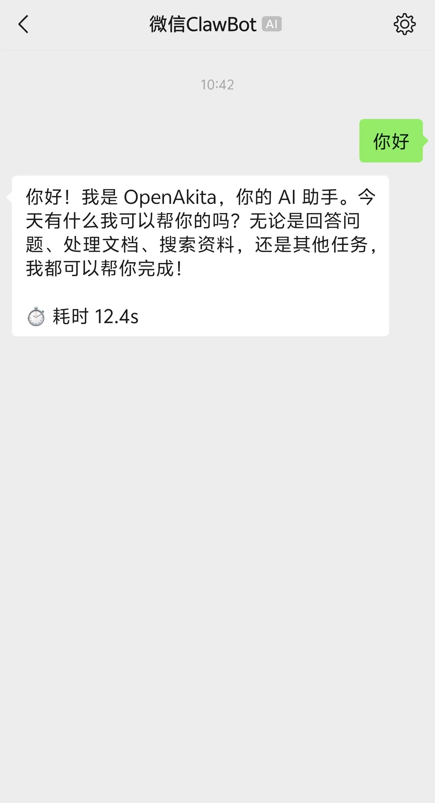
所有通道语音消息统一走 Whisper 转写。
用户发送语音 -> IM 适配器接收 -> Gateway 下载语音 -> Whisper 转写 -> 文本传给 Agent# Windows
winget install FFmpeg
# macOS
brew install ffmpeg
# Linux (Ubuntu/Debian)
sudo apt install ffmpeg
# Python 静态版
pip install static-ffmpegWHISPER_MODEL=base
WHISPER_LANGUAGE=zh # zh | en | auto| 模型 | 大小 | 速度 | 精度 | 推荐场景 |
|---|---|---|---|---|
| tiny | 39MB | 最快 | 一般 | 资源有限设备 |
| base | 74MB | 快 | 较好 | 默认推荐 |
| small | 244MB | 中 | 好 | 对精度有要求 |
| medium | 769MB | 慢 | 很好 | 专业场景 |
| large | 1.5GB | 最慢 | 最好 | 高精度场景 |
A：在 .env 中将多个通道的 *_ENABLED 设为 true 即可，OpenAkita 会同时连接所有启用的通道。
A：不会。会话按通道独立隔离。
A：默认不共享，每个平台的对话历史分开存储。
A：平台消息 → Adapter（解析）→ UnifiedMessage → Gateway（预处理）→ Agent → 回复原路返回。
A：可通过日志、OpenAkita Desktop 状态页和 GET /api/im/channels 查看。
A：Telegram 通常需要代理，其他国内平台一般不需要。
A：不会。两者最终写入同一个 .env 文件，可以先用 Desktop 完成基本配置，再手动微调。
A：有。OpenAkita Desktop（基于 Tauri）提供图形界面完成所有 IM 通道配置，无需手动编辑 .env 文件。
# ========== IM 通道 ==========
# --- Telegram ---
TELEGRAM_ENABLED=false
TELEGRAM_BOT_TOKEN=
TELEGRAM_PROXY=
# TELEGRAM_WEBHOOK_URL=
# TELEGRAM_REQUIRE_PAIRING=true
# TELEGRAM_PAIRING_CODE=
# --- 飞书（需要 openakita[feishu]）---
FEISHU_ENABLED=false
FEISHU_APP_ID=
FEISHU_APP_SECRET=
# --- 钉钉（需要 openakita[dingtalk]）---
DINGTALK_ENABLED=false
DINGTALK_CLIENT_ID=
DINGTALK_CLIENT_SECRET=
# --- 企业微信（需要 openakita[wework]）---
WEWORK_ENABLED=false
WEWORK_CORP_ID=
WEWORK_TOKEN=
WEWORK_ENCODING_AES_KEY=
# WEWORK_CALLBACK_PORT=9880
# --- QQ（需要 openakita[qq]）---
QQ_ENABLED=false
QQ_WS_URL=ws://127.0.0.1:8080
QQ_ACCESS_TOKEN=
# --- 微信（需要 openakita[wechat]）---
WECHAT_ENABLED=false
# --- 语音识别 ---
WHISPER_MODEL=base
WHISPER_LANGUAGE=zh